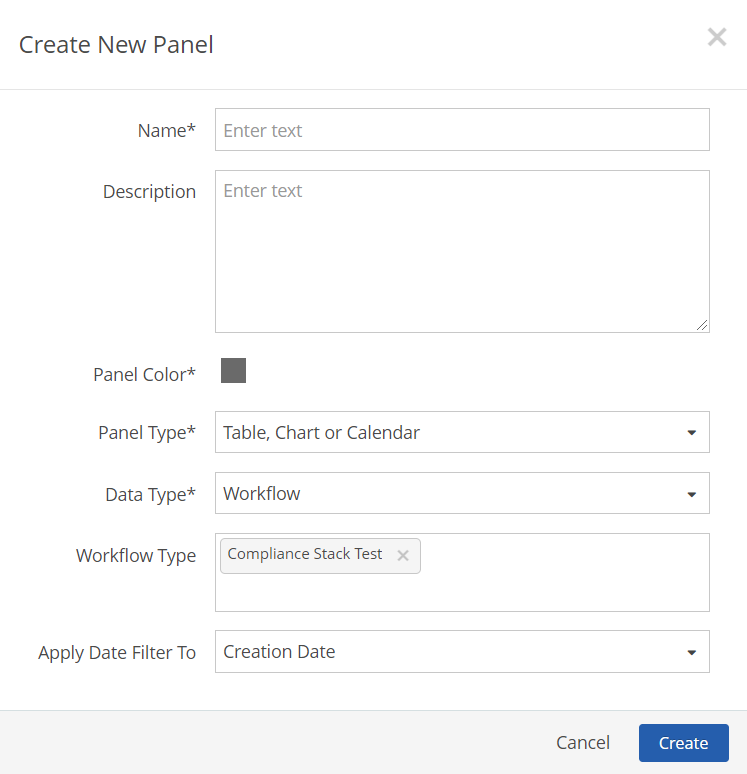
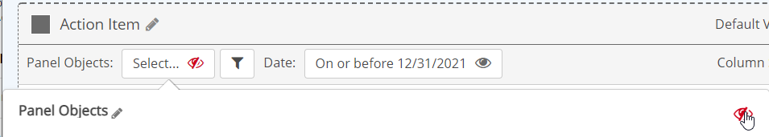
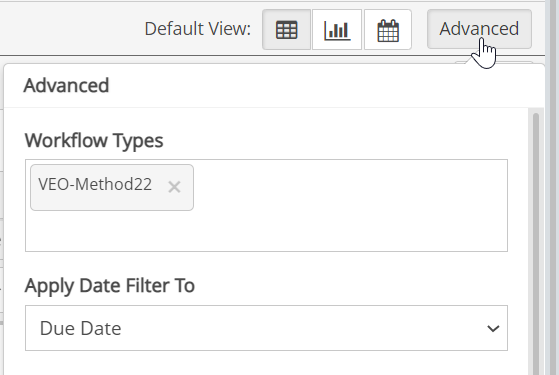
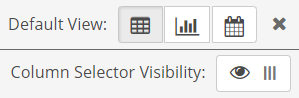
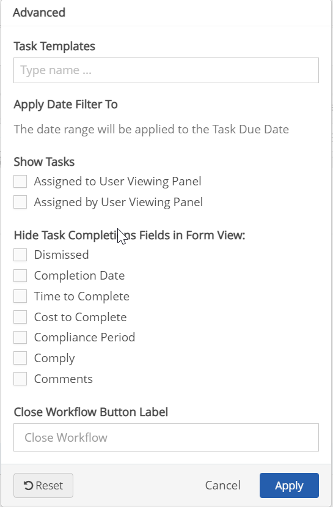
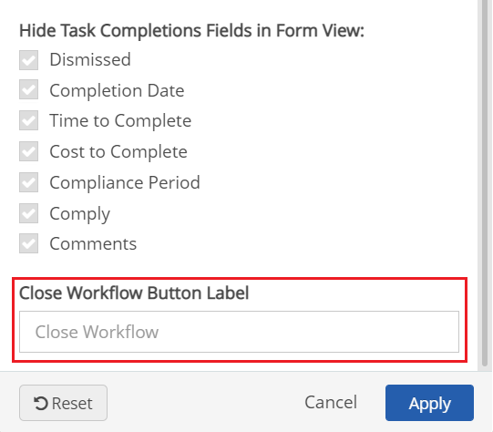

For management purposes, you can also add a link to the Task Edit page in order to edit task settings from the Management System (link opens in a new browser tab)
To add a workflow panel to a page:
From the page view, select Settings.
Click Add Panel.
From the Add New Panel dialog, click Create New Panel.
Or, select panel template(s) to add and click Add selected Panels.
Enter a name for the panel and optional description.
Choose a panel color (color of the top bar and frame).
For the Panel Type, select Table, Chart or Calendar.
For the Data Type, select Workflow.
Select the Workflow Types.
Enter a few characters of the workflow type name, then select from the matches offered. You may select one or more.
Select which field to apply the Date Filter to: Creation Date, Due Date, Close Date, or any date or date/time custom field found on the workflow template.

Select Create.
Once the panel has been added to the page, click Edit Panel Contents to configure the settings. You will be prompted to save the page first before proceeding to the configuration screen.
Panel Objects: Panel object selections will filter workflows for those associated with the selected objects or by their parent objects. Workflows are filtered first for the Workflow Types that you select for the panel. Object associations are not required for workflows, so if the workflows you want to display do not have object associations, you can disable the object selector. You can also disable the panel object selector if you want to apply only the objects selected for the page.
To disable the object selector:
Click the Panel Objects box.
Select the eyeball to disable it.
Click Apply.

To select objects for workflow associations: See Set Panel Objects Filter. Objects used in the panel may be any subset of the objects selected in the page object selector.
If the Ignore Page Filters panel setting is active, you will override any of the objects selected in the Page Objects filter. If Show Users All Objects in System is active in the page and/or panel settings, users may select any object in the system, regardless of their Management System object permissions. Users will only be able to view and edit data for workflow instances in which they participate through a Workflow Role with Report permission.
Date Range: The date range defines the period for the workflows displayed in the panel. The date range may apply to the Creation Date, Due Date, Close Date or to any global date field on the workflow form template. The field that the date range applies to is selected when the panel is created. It may be edited from the Advanced button fly-out.

By default, the panel uses the page date range. However, a date range selector may be enabled for the panel, which will operate independently of the page date selector. You may pre-configure the panel to show the relative period that users will need (such as This Month). You may also decide whether you want users to be able to set a custom date range with specific start and end dates, or use only the pre-configured date range. To configure the panel date range, see Panel Date Selector.
Default View: Select either the Table, Chart or Calendar icon to set the default view.
Column Selector Visibility: Use this option to enable or disable the column selector button. When enabled, users can choose to hide or show columns in the table display to customize the view and to select columns for downloading to Excel.

To edit Workflow content for the panel and the form:
Click Edit Panel Content, then select Advanced.

Workflow Types: Add the workflow types that you want to show in the panel. If no type is selected, all workflows that apply to the page or panel objects will be displayed.
Apply Date Filter To: Creation Date, Due Date, Close Date or any global date field on the workflow.
Show Workflows: Filter the workflows shown to the user by these criteria:
Show User All Records in System (displays all relevant data to the user, regardless of their permissions)
Assigned to User Viewing Panel
Created by User Viewing Panel
User Viewing Panel is a Participant
User is a Member of Roles
User is a Supervisor of Role Members of
User is a Management of Role Members of
Hide Task Completion Fields in Form View: Check the task completion fields that you do not want to show on the form when there is an associated task. By default, only the Completion Status, Completion Date and Comments fields are shown. Other optional fields are hidden.
Close Workflow Button Label: Type the desired name of the button that closes the workflow. The name appears on the workflow form.

Click Apply to apply settings.
Select Save to save changes to the panel. Also click Save to save the page after changes.
The default columns on the Workflow panel are:
Form: Link to workflow form to complete a step. Note: In order for calendar links to default to Form, the column must be to the left of the Platform Link column, if that column is also included.
Creation Date
Name
Type Name
Current Step Status
Assigned To
You can add additional columns from the Field Selector menu on the left and edit the column display. Additional Properties for workflows include:
Platform Link: Configurable link to a workflow form in the Management System, or to open the form in another App. See Panel Links to Forms and Other Apps.
Edit Task link: Will open the Task Edit link for the associated task in the Management System in a new browser tab. The user must have task edit permissions in order to open the link.
Workflow fields, both native and global custom fields, for the selected workflow type.
Properties of a Parent or Grandparent workflow, including standard fields and global custom fields.
Properties of Associated Objects, including all standard and custom fields.
Properties of a Requirement or system model tree object that is in the direct path of the workflow associated object, including all standard and custom fields.